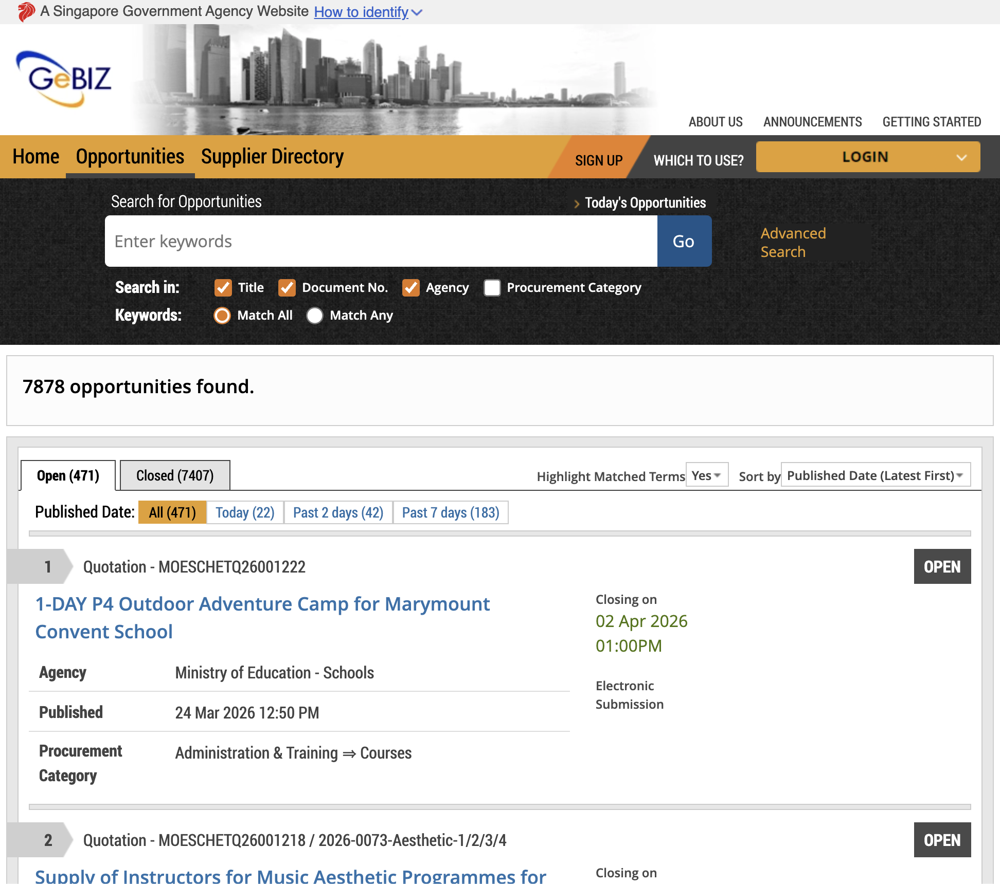

01 · 2025
Delivered

Tender Webscraper
A Python scraper that checks public tender portals every morning and hands the BD team a filtered shortlist. My first time coding with ChatGPT beside me.
- Period
- Jan–Apr 2025
- For
- BD team, ST Logistics
- Stack
- Python · requests · BeautifulSoup